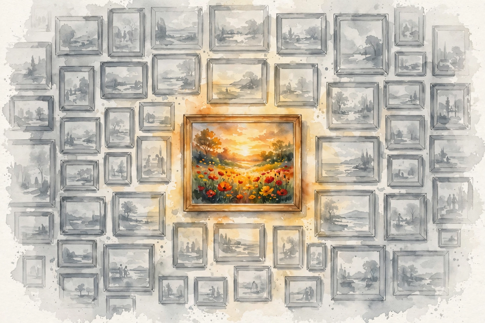
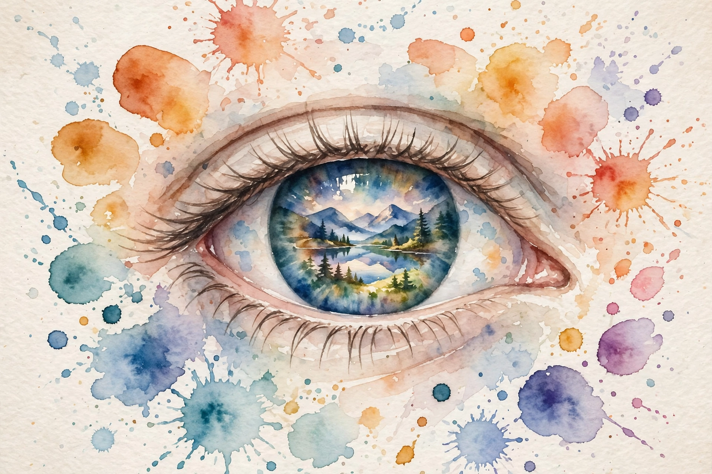

Interactive companion
Memorability

Two paintings
Imagine two paintings. Same year, same city, same pigments, same subject matter. One hangs in a climate-controlled vault in Paris or New York, insured for a hundred million dollars, among the Picassos, the Matisses, the Georgia O'Keeffes, the Salvador Dalis. A masterpiece. The other languishes in a basement in North Carolina, or in a thrift store bin priced at five dollars. Forgotten.
We say beauty is in the eye of the beholder, that there is no accounting for taste. But if art is subjective, why do so many people agree on which paintings are masterpieces? For a painting to stay famous for decades, multitudes must agree it is a masterpiece. Are they sheep following one another? Or do specific combinations of color and texture make paintings evocative and memorable? Is there a formula for masterpieces?
Source fact The episode answer: the place to look is not in the paintings. It is inside your brain.
The visual Mandela effect
The investigation starts with failure, and a game. Look at two versions of the Monopoly Man. Which is real? If you picked the one with the monocle, you are wrong. The Monopoly Man has no monocle. He never had one. He wears no eyewear at all.
Try C-3PO. Entirely gold, or one silver leg? If you said all gold, wrong again. C-3PO always had a silver left leg. And Waldo, the figure you hunted for hours: does he hold a cane, or are his hands empty? Most people say no cane. He does hold one.
The remarkable part is not that you forgot. It is that multitudes make the same identical mistake. We remember a monocle that never existed, because it feels right. This shared false memory has a name: the Mandela effect, coined by paranormal researcher Fiona Broome after she discovered she shared a false memory with many others that Nelson Mandela died in prison in the 1980s. He did not. He spent more than 25 years in a South African prison, survived it, became president, and lived a long life.
Some people online call this evidence of parallel universes. Wilma Bainbridge, a psychologist at the University of Chicago, had a different theory: the human mind makes predictable errors in memory. She called her version the visual Mandela effect and took it into the lab.
Nugget 1 · Visual Mandela effect
We misremember together, in the same direction
What happened. Crowds share identical false memories of famous images: a monocle that never existed, a cane people deny, a cornucopia missing from the Fruit of the Loom logo.
Why it matters. The errors are not random noise. They point the same way, which means the machinery has a grain, and the grain can be studied.
The principle. When everyone makes the same mistake, study the mistake. It maps the machine.
Source: episode transcript, 00:02:27 to 00:04:20. Source fact
The lab test
Bainbridge started with 40 altered images and showed versions to hundreds of people. The Fruit of the Loom logo lives in most minds as fruit spilling from a woven basket or cornucopia. The real logo is just fruit. No basket, no cornucopia, never was.
Two theories competed. Perhaps wrong versions flood the internet and we absorb misinformation. Or perhaps mental associations lead us astray: a rich 1930s banker simply must have a monocle. Bainbridge tested both. Both were wrong.
“The wrong version of the image is just more sticky.”
Narration, Hidden Brain episode 6
Interpretation The brain has a propensity to remember certain images. Stickiness is a property of the image meeting the brain, not of truth. And that raised the next question: if some images are stickier than others, are some simply easier to remember, full stop?
10,000 faces
You might object that we remember famous faces because we saw them on screens. Bainbridge answered by building a database of more than 10,000 ordinary faces and showing them to thousands of people. The result surprised the team: some faces everyone remembered, and some faces everyone forgot.
Do we remember beautiful faces? Not necessarily. Attractiveness had a weak connection to memorability, and beauty could even make a face easier to confuse with someone else. Do we remember faces for the emotions they show? Looking irresponsible helped slightly, but explained only a tiny fraction of the data. Something else, an X factor, a hidden visual code, made certain images stick.
Nugget 2 · 10,000 faces
Memorability is not beauty, and not fame
What happened. With fame removed from the equation, ordinary faces still split cleanly into the remembered and the forgotten, and beauty did not predict the split.
Why it matters. Taste feels personal, but the data says some of it runs on shared, impersonal machinery.
The principle. Do not confuse what you like with what sticks. They are different systems.
Source: episode transcript, 00:07:09. Source fact
The museum experiment
If the code works for faces, does it work for art? Bainbridge went to the Art Institute of Chicago, one of the largest and most prestigious museums in the world. Volunteers explored the American Art Wing freely, at their own pace, talking with friends. Then, on a bench outside, they took a surprise quiz on their phones: paintings from the exhibit mixed with similar ones they had not seen. Do you remember this painting?
Tastes differ, viewing times differ, yet the same split appeared. Some pieces everyone remembered, some everyone forgot. Size mattered: bigger paintings stuck better. Context mattered: works in the modern, spacious wing beat works in the cluttered, traditional rooms, perhaps for facing less competition for attention.
Then the kicker. She tested beauty. She tested emotion. She tested colorfulness. None of them predicted memorability. A heartbreakingly beautiful painting could vanish from memory in five minutes. A weird, jarring abstract piece could stick. The stickiness came from some mysterious arrangement of the pieces that appealed to the brain.
What predicted memorability in the museum
Factors tested against what visitors actually remembered
Source: episode transcript, 00:12:19. Source fact
Illustrative: the episode reports which factors mattered, not numeric effect sizes. The bars mark yes or no.

ResMem
The human brain holds billions of neurons with trillions of connections. Somewhere in that network sits the answer. Bainbridge could not pinpoint it, but she could do the next best thing: train an AI to learn the secret patterns the way a student would.
Show the AI a face, let it guess how memorable it is, and reward correct guesses by strengthening the connections it used, weaken them when it errs. Repeat. Eventually the AI learns the patterns humans use. Bainbridge team built exactly this and called it ResMem. You can upload a picture and it scores it: 1 means 100 percent of people remember it, 0 means no one will.
They trained it on regular photographs: faces, scenes, everyday objects. They did not train it on art history. The AI knew nothing about Picasso, nothing about Van Gogh, nothing about what a masterpiece is supposed to look like. Then came the ultimate test: feed it the Art Institute paintings, famous and obscure, and ask which are memorable.
The result staggered the team. The AI tended to pick the paintings humans considered masterpieces. ResMem predicted the famous pieces were more memorable than the non-famous ones. American Gothic is not famous only because critics praised it and crowds followed. Grant Wood arranged visual information in a way that hacked the human brain. The AI, blind to culture and history, found masterpieces by reading pixels.
The ResMem scale
An AI blind to art history scores memorability from pixels alone
Source: episode transcript, 00:11:46. Source fact
Nugget 3 · ResMem
The machine found the masterpieces without knowing art
What happened. An AI trained only on ordinary photos, never on art, picked the famous paintings as the most memorable ones.
Why it matters. Fame has a physical substrate. The visual hook that makes a painting stick can be measured in pixels.
The principle. When experts and crowds agree for decades, look for the mechanism underneath the agreement.
Source: episode transcript, 00:11:46. Source fact
Canaries in a coal mine
The episode closes with a profound application. Healthy brains tend to remember similar images. But people in the early stages of cognitive decline, like Alzheimer disease, start to diverge from healthy people in which images they find memorable. A study found special images that stay memorable for healthy people yet turn forgettable in early Alzheimer.
Researchers might one day use these images like canaries in a coal mine: if everyone remembers certain images but your friend forgets them, it could warn that something is wrong in her brain.
The episode closes on the real contest: not the scramble for attention in the moment, but the struggle to be remembered in the brains of other people.
Interpretation The fight is rigged, the episode says, but now you know something about the rules. Memorability is not meaning: a car crash photo scores high and belongs nowhere near your sofa. Still, the romantic idea that art is purely mysterious no longer survives the data. Deep, ancient currents in the brain decide which images last.
Watch the episode
Official Hidden Brain episode video for Memorability.The official Hidden Brain episode video, embedded via youtube-nocookie.com, the only external dependency on this page.
Nugget index
- Nugget 1. We misremember together, in the same direction (The visual Mandela effect)
- Nugget 2. Memorability is not beauty, and not fame (10,000 faces)
- Nugget 3. The machine found the masterpieces without knowing art (ResMem)